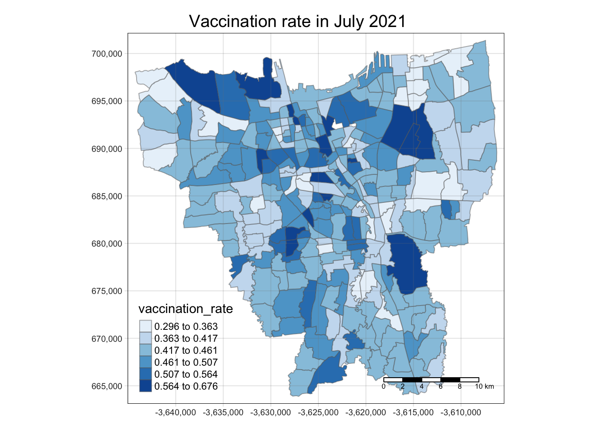
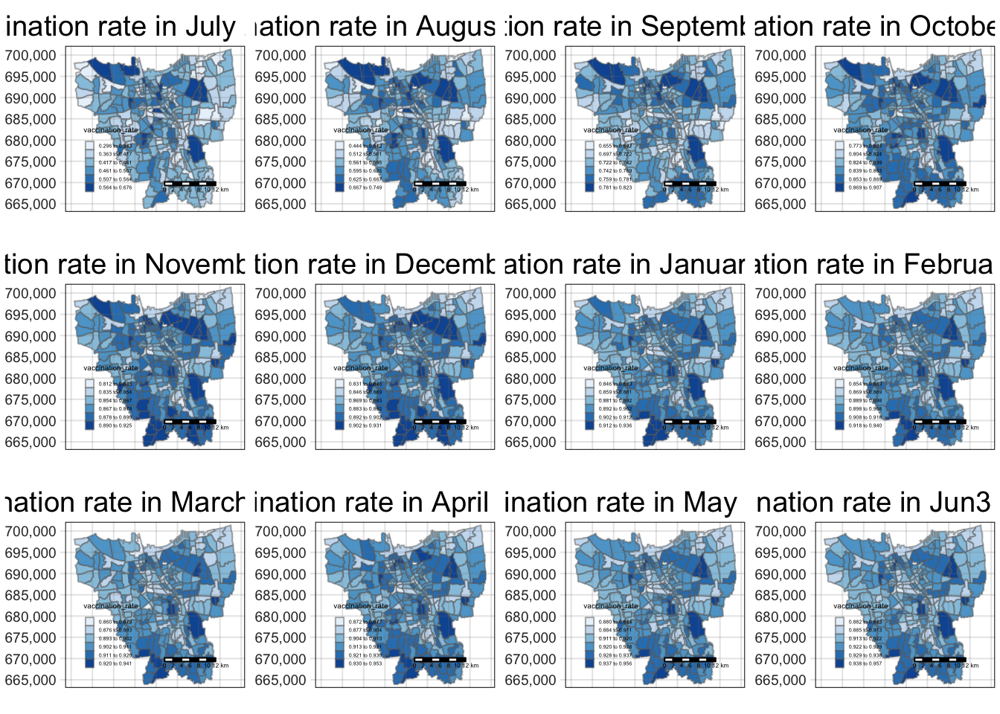

pacman::p_load(sf, spdep, tmap, tidyverse, knitr, kableExtra)Take-home Exercise 2
1 Objectives
Exploratory Spatial Data Analysis (ESDA) hold tremendous potential to address complex problems facing society. In this study, you are tasked to apply appropriate Local Indicators of Spatial Association (LISA) and Emerging Hot Spot Analysis (EHSA) to undercover the spatio-temporal trends of COVID-19 vaccination in DKI Jakarta.
2 Installing Packages
3 Load data
# initialise a dataframe of our geospatial and aspatial data details
datasets <- data.frame(
Type=c("Geospatial",
"Aspatial"),
Name=c("[Shapefile (SHP Batas Desa Provinsi Sumatera Barat)](https://www.indonesia-geospasial.com/2020/04/download-shapefile-shp-batas-desa.html)",
"[Open Data Vaksinasi Provinsi DKI Jarkarta](https://riwayat-file-vaksinasi-dki-jakarta-jakartagis.hub.arcgis.com/)"),
Format=c("Shapefile",
".xlsx"),
Description=c("Sub-districts in Indonesia",
"Monthly vaccination Data in Jarkata")
)
# with reference to this guide on kableExtra:
# https://cran.r-project.org/web/packages/kableExtra/vignettes/awesome_table_in_html.html
# kable_material is the name of the kable theme
# 'hover' for to highlight row when hovering, 'scale_down' to adjust table to fit page width
library(knitr)
library(kableExtra)
kable(head(datasets), caption="Datasets Used") %>%
kable_material("hover", latex_options="scale_down")| Type | Name | Format | Description |
|---|---|---|---|
| Geospatial | [Shapefile (SHP Batas Desa Provinsi Sumatera Barat)](https://www.indonesia-geospasial.com/2020/04/download-shapefile-shp-batas-desa.html) | Shapefile | Sub-districts in Indonesia |
| Aspatial | [Open Data Vaksinasi Provinsi DKI Jarkarta](https://riwayat-file-vaksinasi-dki-jakarta-jakartagis.hub.arcgis.com/) | .xlsx | Monthly vaccination Data in Jarkata |
3.1 Geospatial data
3.1.1 Reading Geospatial data into R
For the purpose of this study, DKI Jakarta administration boundary 2019 will be used. The data set can be downloaded at Indonesia Geospatial portal, specifically at this page.
geoJAR <- st_read(dsn = "data/geospatial/",
layer= "BATAS_DESA_DESEMBER_2019_DUKCAPIL_DKI_JAKARTA")Reading layer `BATAS_DESA_DESEMBER_2019_DUKCAPIL_DKI_JAKARTA' from data source
`/Users/pengyouyun/youyunpeng/IS415/Take-home_Ex/Take-home_Ex02/data/geospatial'
using driver `ESRI Shapefile'
Simple feature collection with 269 features and 161 fields
Geometry type: MULTIPOLYGON
Dimension: XY
Bounding box: xmin: 106.3831 ymin: -6.370815 xmax: 106.9728 ymax: -5.184322
Geodetic CRS: WGS 84From the output message, we learn that:
Geometry type is multipolygon
269 features, 161 fields
Assigned CRS is WGS 84, the ‘World Geodetic System 1984’.
3.1.2 Data Pre-Processing
We need to check for invalid geometries and missing values in our geospatial data.
length(which(st_is_valid(geoJAR) == FALSE))[1] 0geoJAR[rowSums(is.na(geoJAR))!=0,]Simple feature collection with 2 features and 161 fields
Geometry type: MULTIPOLYGON
Dimension: XY
Bounding box: xmin: 106.8412 ymin: -6.154036 xmax: 106.8612 ymax: -6.144973
Geodetic CRS: WGS 84
OBJECT_ID KODE_DESA DESA KODE PROVINSI KAB_KOTA KECAMATAN
243 25645 31888888 DANAU SUNTER 318888 DKI JAKARTA <NA> <NA>
244 25646 31888888 DANAU SUNTER DLL 318888 DKI JAKARTA <NA> <NA>
DESA_KELUR JUMLAH_PEN JUMLAH_KK LUAS_WILAY KEPADATAN PERPINDAHA JUMLAH_MEN
243 <NA> 0 0 0 0 0 0
244 <NA> 0 0 0 0 0 0
PERUBAHAN WAJIB_KTP SILAM KRISTEN KHATOLIK HINDU BUDHA KONGHUCU KEPERCAYAA
243 0 0 0 0 0 0 0 0 0
244 0 0 0 0 0 0 0 0 0
PRIA WANITA BELUM_KAWI KAWIN CERAI_HIDU CERAI_MATI U0 U5 U10 U15 U20 U25
243 0 0 0 0 0 0 0 0 0 0 0 0
244 0 0 0 0 0 0 0 0 0 0 0 0
U30 U35 U40 U45 U50 U55 U60 U65 U70 U75 TIDAK_BELU BELUM_TAMA TAMAT_SD SLTP
243 0 0 0 0 0 0 0 0 0 0 0 0 0 0
244 0 0 0 0 0 0 0 0 0 0 0 0 0 0
SLTA DIPLOMA_I DIPLOMA_II DIPLOMA_IV STRATA_II STRATA_III BELUM_TIDA
243 0 0 0 0 0 0 0
244 0 0 0 0 0 0 0
APARATUR_P TENAGA_PEN WIRASWASTA PERTANIAN NELAYAN AGAMA_DAN PELAJAR_MA
243 0 0 0 0 0 0 0
244 0 0 0 0 0 0 0
TENAGA_KES PENSIUNAN LAINNYA GENERATED KODE_DES_1 BELUM_ MENGUR_ PELAJAR_
243 0 0 0 <NA> <NA> 0 0 0
244 0 0 0 <NA> <NA> 0 0 0
PENSIUNA_1 PEGAWAI_ TENTARA KEPOLISIAN PERDAG_ PETANI PETERN_ NELAYAN_1
243 0 0 0 0 0 0 0 0
244 0 0 0 0 0 0 0 0
INDUSTR_ KONSTR_ TRANSP_ KARYAW_ KARYAW1 KARYAW1_1 KARYAW1_12 BURUH BURUH_
243 0 0 0 0 0 0 0 0 0
244 0 0 0 0 0 0 0 0 0
BURUH1 BURUH1_1 PEMBANT_ TUKANG TUKANG_1 TUKANG_12 TUKANG__13 TUKANG__14
243 0 0 0 0 0 0 0 0
244 0 0 0 0 0 0 0 0
TUKANG__15 TUKANG__16 TUKANG__17 PENATA PENATA_ PENATA1_1 MEKANIK SENIMAN_
243 0 0 0 0 0 0 0 0
244 0 0 0 0 0 0 0 0
TABIB PARAJI_ PERANCA_ PENTER_ IMAM_M PENDETA PASTOR WARTAWAN USTADZ JURU_M
243 0 0 0 0 0 0 0 0 0 0
244 0 0 0 0 0 0 0 0 0 0
PROMOT ANGGOTA_ ANGGOTA1 ANGGOTA1_1 PRESIDEN WAKIL_PRES ANGGOTA1_2
243 0 0 0 0 0 0 0
244 0 0 0 0 0 0 0
ANGGOTA1_3 DUTA_B GUBERNUR WAKIL_GUBE BUPATI WAKIL_BUPA WALIKOTA WAKIL_WALI
243 0 0 0 0 0 0 0 0
244 0 0 0 0 0 0 0 0
ANGGOTA1_4 ANGGOTA1_5 DOSEN GURU PILOT PENGACARA_ NOTARIS ARSITEK AKUNTA_
243 0 0 0 0 0 0 0 0 0
244 0 0 0 0 0 0 0 0 0
KONSUL_ DOKTER BIDAN PERAWAT APOTEK_ PSIKIATER PENYIA_ PENYIA1 PELAUT
243 0 0 0 0 0 0 0 0 0
244 0 0 0 0 0 0 0 0 0
PENELITI SOPIR PIALAN PARANORMAL PEDAGA_ PERANG_ KEPALA_ BIARAW_ WIRASWAST_
243 0 0 0 0 0 0 0 0 0
244 0 0 0 0 0 0 0 0 0
LAINNYA_12 LUAS_DESA KODE_DES_3 DESA_KEL_1 KODE_12
243 0 0 <NA> <NA> 0
244 0 0 <NA> <NA> 0
geometry
243 MULTIPOLYGON (((106.8612 -6...
244 MULTIPOLYGON (((106.8504 -6...geoJAR<- na.exclude(geoJAR)3.1.3 Checking CRS
st_crs(geoJAR)Coordinate Reference System:
User input: WGS 84
wkt:
GEOGCRS["WGS 84",
DATUM["World Geodetic System 1984",
ELLIPSOID["WGS 84",6378137,298.257223563,
LENGTHUNIT["metre",1]]],
PRIMEM["Greenwich",0,
ANGLEUNIT["degree",0.0174532925199433]],
CS[ellipsoidal,2],
AXIS["latitude",north,
ORDER[1],
ANGLEUNIT["degree",0.0174532925199433]],
AXIS["longitude",east,
ORDER[2],
ANGLEUNIT["degree",0.0174532925199433]],
ID["EPSG",4326]]The assigned coordinate system if WGS 84, which is not appropriate as this is an Indonesia-specific geospatial dataset. It should be using the national CRS of indonesia, GDN95, with EPSG code 23845.
# transforms the CRS to DGN95, ESPG code 23845
geoJAR <- st_transform(geoJAR, 23845)
st_crs(geoJAR)Coordinate Reference System:
User input: EPSG:23845
wkt:
PROJCRS["DGN95 / Indonesia TM-3 zone 54.1",
BASEGEOGCRS["DGN95",
DATUM["Datum Geodesi Nasional 1995",
ELLIPSOID["WGS 84",6378137,298.257223563,
LENGTHUNIT["metre",1]]],
PRIMEM["Greenwich",0,
ANGLEUNIT["degree",0.0174532925199433]],
ID["EPSG",4755]],
CONVERSION["Indonesia TM-3 zone 54.1",
METHOD["Transverse Mercator",
ID["EPSG",9807]],
PARAMETER["Latitude of natural origin",0,
ANGLEUNIT["degree",0.0174532925199433],
ID["EPSG",8801]],
PARAMETER["Longitude of natural origin",139.5,
ANGLEUNIT["degree",0.0174532925199433],
ID["EPSG",8802]],
PARAMETER["Scale factor at natural origin",0.9999,
SCALEUNIT["unity",1],
ID["EPSG",8805]],
PARAMETER["False easting",200000,
LENGTHUNIT["metre",1],
ID["EPSG",8806]],
PARAMETER["False northing",1500000,
LENGTHUNIT["metre",1],
ID["EPSG",8807]]],
CS[Cartesian,2],
AXIS["easting (X)",east,
ORDER[1],
LENGTHUNIT["metre",1]],
AXIS["northing (Y)",north,
ORDER[2],
LENGTHUNIT["metre",1]],
USAGE[
SCOPE["Cadastre."],
AREA["Indonesia - onshore east of 138°E."],
BBOX[-9.19,138,-1.49,141.01]],
ID["EPSG",23845]]3.1.4 Removal of outer islands
As per the assignment requirements, the outer islands are not relevant to our analysis.
# filtering out the island
geoJAR <- filter(geoJAR, KAB_KOTA != "KEPULAUAN SERIBU") # removing rows with the variable KEPULAUAN SERIBU, which translates to thousand islands
geoJARSimple feature collection with 261 features and 161 fields
Geometry type: MULTIPOLYGON
Dimension: XY
Bounding box: xmin: -3644275 ymin: 663887.8 xmax: -3606237 ymax: 701380.1
Projected CRS: DGN95 / Indonesia TM-3 zone 54.1
First 10 features:
OBJECT_ID KODE_DESA DESA KODE PROVINSI KAB_KOTA
1 25477 3173031006 KEAGUNGAN 317303 DKI JAKARTA JAKARTA BARAT
2 25478 3173031007 GLODOK 317303 DKI JAKARTA JAKARTA BARAT
3 25397 3171031003 HARAPAN MULIA 317103 DKI JAKARTA JAKARTA PUSAT
4 25400 3171031006 CEMPAKA BARU 317103 DKI JAKARTA JAKARTA PUSAT
5 25390 3171021001 PASAR BARU 317102 DKI JAKARTA JAKARTA PUSAT
6 25391 3171021002 KARANG ANYAR 317102 DKI JAKARTA JAKARTA PUSAT
7 25394 3171021005 MANGGA DUA SELATAN 317102 DKI JAKARTA JAKARTA PUSAT
8 25386 3171011003 PETOJO UTARA 317101 DKI JAKARTA JAKARTA PUSAT
9 25403 3171041001 SENEN 317104 DKI JAKARTA JAKARTA PUSAT
10 25408 3171041006 BUNGUR 317104 DKI JAKARTA JAKARTA PUSAT
KECAMATAN DESA_KELUR JUMLAH_PEN JUMLAH_KK LUAS_WILAY KEPADATAN
1 TAMAN SARI KEAGUNGAN 21609 7255 0.36 60504
2 TAMAN SARI GLODOK 9069 3273 0.37 24527
3 KEMAYORAN HARAPAN MULIA 29085 9217 0.53 54465
4 KEMAYORAN CEMPAKA BARU 41913 13766 0.97 42993
5 SAWAH BESAR PASAR BARU 15793 5599 1.76 8971
6 SAWAH BESAR KARANG ANYAR 33383 11276 0.47 71628
7 SAWAH BESAR MANGGA DUA SELATAN 35906 12817 1.31 27463
8 GAMBIR PETOJO UTARA 21828 7328 1.14 19144
9 SENEN SENEN 8643 3049 0.82 10594
10 SENEN BUNGUR 23001 7944 0.67 34418
PERPINDAHA JUMLAH_MEN PERUBAHAN WAJIB_KTP SILAM KRISTEN KHATOLIK HINDU BUDHA
1 102 68 20464 16027 15735 2042 927 15 2888
2 25 52 8724 7375 1842 2041 1460 9 3716
3 131 104 27497 20926 26328 1710 531 42 469
4 170 151 38323 30264 36813 3392 1082 127 495
5 58 36 15006 12559 7401 3696 1602 622 2462
6 113 60 31014 24784 23057 4058 2100 25 4134
7 178 92 33021 26730 23424 5130 2575 27 4740
8 87 83 19275 16478 15355 3061 1838 9 1559
9 56 21 8306 6298 5450 1991 705 115 381
10 128 70 21652 16987 17431 3099 1258 47 1143
KONGHUCU KEPERCAYAA PRIA WANITA BELUM_KAWI KAWIN CERAI_HIDU CERAI_MATI U0
1 2 0 11049 10560 10193 10652 255 509 1572
2 1 0 4404 4665 4240 4364 136 329 438
3 5 0 14696 14389 14022 13450 430 1183 2232
4 1 3 21063 20850 20336 19487 523 1567 3092
5 10 0 7833 7960 7578 7321 217 677 802
6 9 0 16887 16496 15860 15945 381 1197 2220
7 10 0 18338 17568 17239 17198 476 993 2399
8 4 2 10955 10873 10551 10070 305 902 1406
9 1 0 4446 4197 4360 3915 101 267 585
10 1 22 11679 11322 11010 11231 206 554 1679
U5 U10 U15 U20 U25 U30 U35 U40 U45 U50 U55 U60 U65 U70 U75
1 1751 1703 1493 1542 1665 1819 1932 1828 1600 1408 1146 836 587 312 415
2 545 524 521 543 628 691 782 675 607 619 602 614 555 311 414
3 2515 2461 2318 2113 2170 2363 2595 2371 2250 1779 1379 1054 654 411 420
4 3657 3501 3486 3098 3024 3188 3662 3507 3391 2696 1909 1397 970 631 704
5 995 1016 1106 1081 1002 1236 1422 1200 1163 1099 979 880 747 488 577
6 2687 2653 2549 2313 2446 2735 3034 2689 2470 2129 1843 1386 958 554 717
7 2953 2754 2666 2515 2725 3122 3385 3037 2597 2282 1930 1394 932 573 642
8 1625 1625 1718 1612 1612 1707 1806 1746 1672 1427 1258 968 706 412 528
9 758 714 672 583 670 797 796 740 577 495 437 331 234 129 125
10 1794 1797 1789 1667 1773 1957 1952 1785 1667 1489 1219 941 647 386 459
TIDAK_BELU BELUM_TAMA TAMAT_SD SLTP SLTA DIPLOMA_I DIPLOMA_II DIPLOMA_IV
1 3426 1964 2265 3660 8463 81 428 1244
2 1200 481 655 1414 3734 23 273 1241
3 4935 2610 2346 3167 12172 84 1121 2477
4 7328 3763 2950 5138 16320 179 1718 4181
5 2121 1278 1169 2236 5993 43 573 2199
6 5075 3241 4424 5858 12448 85 604 1582
7 6089 3184 3620 6159 14080 83 740 1850
8 3290 1951 1660 3008 8743 63 734 2189
9 1401 768 877 1417 2936 27 280 804
10 3506 2065 1609 2918 10155 79 708 1832
STRATA_II STRATA_III BELUM_TIDA APARATUR_P TENAGA_PEN WIRASWASTA PERTANIAN
1 74 4 3927 81 70 8974 1
2 46 2 1388 10 43 3832 0
3 166 7 5335 513 288 10662 1
4 315 21 8105 931 402 14925 3
5 168 13 2676 156 81 6145 1
6 63 3 5985 132 123 12968 2
7 92 9 6820 79 73 14714 5
8 174 16 3809 145 109 8549 1
9 125 8 1574 369 30 3175 0
10 122 7 3948 609 137 8284 0
NELAYAN AGAMA_DAN PELAJAR_MA TENAGA_KES PENSIUNAN LAINNYA GENERATED
1 0 6 4018 28 57 4447 30 Juni 2019
2 0 6 1701 29 50 2010 30 Juni 2019
3 2 5 6214 80 276 5709 30 Juni 2019
4 0 40 9068 142 498 7799 30 Juni 2019
5 1 49 3135 60 59 3430 30 Juni 2019
6 1 10 6823 48 56 7235 30 Juni 2019
7 2 11 6866 55 75 7206 30 Juni 2019
8 0 54 4731 68 97 4265 30 Juni 2019
9 0 15 1779 89 53 1559 30 Juni 2019
10 0 16 5063 93 146 4705 30 Juni 2019
KODE_DES_1 BELUM_ MENGUR_ PELAJAR_ PENSIUNA_1 PEGAWAI_ TENTARA KEPOLISIAN
1 3173031006 3099 4447 3254 80 48 4 10
2 3173031007 1032 2026 1506 65 5 0 1
3 3171031003 4830 5692 6429 322 366 41 16
4 3171031006 7355 7692 8957 603 612 57 42
5 3171021001 2390 3500 3185 70 65 74 2
6 3171021002 5330 7306 6993 75 73 20 17
7 3171021005 5605 7042 6858 97 48 12 7
8 3171011003 3365 4357 4719 132 89 11 9
9 3171041001 1553 1627 1701 67 91 90 165
10 3171041006 3924 4731 4885 165 174 340 15
PERDAG_ PETANI PETERN_ NELAYAN_1 INDUSTR_ KONSTR_ TRANSP_ KARYAW_ KARYAW1
1 31 0 0 1 7 3 2 6735 9
2 5 0 0 0 3 0 0 3034 2
3 1 1 0 1 4 2 7 7347 74
4 3 2 0 0 3 6 4 10185 231
5 2 1 0 0 0 1 0 4319 16
6 3 1 0 0 1 1 0 9405 13
7 1 1 0 1 7 5 3 10844 10
8 0 2 0 0 0 0 0 6909 24
9 1 0 0 0 2 2 0 1959 17
10 2 0 0 0 2 5 0 5661 29
KARYAW1_1 KARYAW1_12 BURUH BURUH_ BURUH1 BURUH1_1 PEMBANT_ TUKANG TUKANG_1
1 0 23 515 1 0 0 1 0 1
2 0 4 155 0 0 0 1 0 0
3 5 25 971 0 1 0 4 0 0
4 15 35 636 0 0 0 1 0 0
5 0 16 265 1 0 0 7 0 0
6 0 6 1085 0 0 0 5 0 0
7 1 9 652 1 1 0 1 1 0
8 0 11 357 0 0 0 6 0 0
9 2 11 226 0 0 0 1 0 0
10 4 15 542 0 0 0 10 0 0
TUKANG_12 TUKANG__13 TUKANG__14 TUKANG__15 TUKANG__16 TUKANG__17 PENATA
1 0 1 0 1 7 1 0
2 0 1 0 0 4 0 0
3 0 0 0 0 10 0 0
4 0 1 0 1 14 0 0
5 0 0 0 0 2 0 1
6 0 0 0 0 7 0 0
7 0 1 0 1 8 1 0
8 0 0 0 0 8 0 0
9 0 0 0 0 1 0 1
10 0 1 0 0 0 0 0
PENATA_ PENATA1_1 MEKANIK SENIMAN_ TABIB PARAJI_ PERANCA_ PENTER_ IMAM_M
1 0 0 11 4 1 0 0 1 0
2 0 0 1 0 0 0 0 0 0
3 0 0 10 12 0 0 0 0 0
4 0 1 8 28 0 0 0 0 0
5 0 0 4 2 1 0 0 1 0
6 0 0 7 3 0 0 0 0 0
7 0 1 8 4 1 0 0 0 0
8 0 2 9 9 0 0 1 0 0
9 0 0 0 6 0 0 0 0 0
10 0 1 15 7 0 0 2 0 0
PENDETA PASTOR WARTAWAN USTADZ JURU_M PROMOT ANGGOTA_ ANGGOTA1 ANGGOTA1_1
1 2 0 7 6 0 0 0 0 0
2 4 1 1 1 0 0 1 0 0
3 5 0 16 1 0 0 0 0 0
4 33 1 27 5 0 0 0 0 0
5 20 8 4 0 0 0 0 0 0
6 10 0 8 0 0 0 1 0 0
7 8 0 6 1 0 0 0 0 0
8 30 23 9 0 0 0 1 0 0
9 14 0 5 0 0 0 0 0 0
10 14 0 9 1 0 0 0 0 0
PRESIDEN WAKIL_PRES ANGGOTA1_2 ANGGOTA1_3 DUTA_B GUBERNUR WAKIL_GUBE BUPATI
1 0 0 0 0 0 0 0 0
2 0 0 0 0 0 0 0 0
3 0 0 0 0 0 0 0 0
4 0 0 0 0 0 0 0 0
5 0 0 0 0 0 0 0 0
6 0 0 0 0 0 0 0 0
7 0 0 0 0 0 0 0 0
8 0 0 0 0 0 0 0 0
9 0 0 0 0 0 0 0 0
10 0 0 0 0 0 0 0 0
WAKIL_BUPA WALIKOTA WAKIL_WALI ANGGOTA1_4 ANGGOTA1_5 DOSEN GURU PILOT
1 0 0 0 0 0 3 72 1
2 0 0 0 0 0 2 40 0
3 0 0 0 0 0 23 272 2
4 0 0 0 0 0 36 378 3
5 0 0 0 0 0 11 69 0
6 0 0 0 0 0 3 126 0
7 0 0 0 0 0 5 71 0
8 0 0 0 0 0 14 97 0
9 0 0 0 0 0 6 23 0
10 0 0 0 0 0 28 106 0
PENGACARA_ NOTARIS ARSITEK AKUNTA_ KONSUL_ DOKTER BIDAN PERAWAT APOTEK_
1 4 0 1 1 1 16 3 7 0
2 1 0 0 0 0 32 1 0 0
3 8 3 2 0 2 35 9 25 2
4 22 5 3 0 11 68 18 44 3
5 5 4 2 0 4 63 1 3 0
6 5 0 0 0 0 27 3 12 1
7 4 0 0 0 0 32 3 20 2
8 4 5 4 2 6 63 3 7 1
9 3 0 1 0 2 48 10 26 2
10 12 5 2 1 3 60 10 16 3
PSIKIATER PENYIA_ PENYIA1 PELAUT PENELITI SOPIR PIALAN PARANORMAL PEDAGA_
1 0 0 0 0 0 65 0 0 379
2 0 0 0 0 1 3 0 0 126
3 1 0 0 6 0 94 0 0 321
4 0 0 0 16 0 123 0 0 562
5 0 0 0 0 1 61 0 0 412
6 0 0 0 2 0 76 0 0 202
7 0 0 0 4 0 79 0 1 225
8 0 0 0 2 0 63 0 0 271
9 1 0 0 4 0 44 0 0 212
10 0 0 0 2 0 101 0 0 331
PERANG_ KEPALA_ BIARAW_ WIRASWAST_ LAINNYA_12 LUAS_DESA KODE_DES_3
1 0 0 0 1370 94 25476 3173031006
2 0 0 1 611 57 25477 3173031007
3 0 0 0 1723 82 25396 3171031003
4 0 0 0 3099 122 25399 3171031006
5 0 0 22 1128 41 25389 3171021001
6 0 0 3 2321 89 25390 3171021002
7 0 0 0 2677 158 25393 3171021005
8 0 0 2 1018 37 25385 3171011003
9 0 0 1 871 15 25402 3171041001
10 0 0 0 1749 94 25407 3171041006
DESA_KEL_1 KODE_12 geometry
1 KEAGUNGAN 317303 MULTIPOLYGON (((-3626874 69...
2 GLODOK 317303 MULTIPOLYGON (((-3627130 69...
3 HARAPAN MULIA 317103 MULTIPOLYGON (((-3621251 68...
4 CEMPAKA BARU 317103 MULTIPOLYGON (((-3620608 69...
5 PASAR BARU 317102 MULTIPOLYGON (((-3624097 69...
6 KARANG ANYAR 317102 MULTIPOLYGON (((-3624785 69...
7 MANGGA DUA SELATAN 317102 MULTIPOLYGON (((-3624752 69...
8 PETOJO UTARA 317101 MULTIPOLYGON (((-3626121 69...
9 SENEN 317104 MULTIPOLYGON (((-3623189 69...
10 BUNGUR 317104 MULTIPOLYGON (((-3622451 69...unique(geoJAR$KAB_KOTA) # Now we are only left with 5 unique vairbales in KAB_KOTA[1] "JAKARTA BARAT" "JAKARTA PUSAT" "JAKARTA UTARA" "JAKARTA TIMUR"
[5] "JAKARTA SELATAN"3.1.5 Retaining the first 9 fields of geoJAR
As per the assignment requirements, we only need to retain the first 9 fields in the geoJAR table.
# filters out other fields by accepting only the first 9 fields
geoJAR <- geoJAR[, 0:9]3.1.6 Translating column names
For ease of comprehension, we translate the column names into english
geoJAR <- geoJAR %>%
dplyr::rename(
Object_ID=OBJECT_ID,
Province=PROVINSI,
City=KAB_KOTA,
District=KECAMATAN,
Village_Code=KODE_DESA,
Village=DESA,
Sub_District=DESA_KELUR,
Code=KODE,
Total_Population=JUMLAH_PEN
)3.2 Aspatial Data
For the purpose of this assignment, data from Riwayat File Vaksinasi DKI Jakarta will be used. Daily vaccination data are provides. We are only required to download either the first day of the month or last day of the month of the study period.
As per the assignment criteria, we downloaded vaccination data of the first day of the month from july 2021 to june 2022. For ease of reading the data into one dataframe, we rename the excel sheets to be in the following format “month year”. For instance, “Data Vaksinasi Bebasis Keluarhan 1 Juli 2021).xlsx” will be renamed to “July 2021”.
Now we are ready to read the excel data!
3.2.1 Reading the Aspatial Data
# Load the readxl library
library(readxl)
# Set the working directory to the folder containing the Excel files
setwd("data/aspatial/")
# Get a list of all Excel files in the directory
files <- list.files(pattern = ".xlsx")
# Loop through the files and read each one into a data frame
for (file in files) {
assign(gsub(".xlsx", "", file), read_excel(file))
}3.2.2 Creating a function to modify dataframes
At the end of the day, we want to create a large dataframe of all the vaccination data, categorised by the date. As part of data wrangling of our dataframes, we want to achieve the following
create a date column for each dataframe
selecting columns relating to spatial information: (`KODE KELURAHAN`, `WILAYAH KOTA`, KECAMATAN, KELURAHAN)
selecting columns relating to vaccination information: (`BELUM VAKSIN`, `TOTAL VAKSIN\r\nDIBERIKAN`)
translating columns to english
creating a new column for total population and vaccination rate
We do so by creating a function that can be used to wrangle all of the date dataframes we have in our environment.
mutate_df<-function(data){
df_name <- deparse(substitute(data))
modified<-data |>
mutate(date=df_name,
.before=1) |>
select(date,
`KODE KELURAHAN`,
`WILAYAH KOTA`,
KECAMATAN,
KELURAHAN,
`BELUM VAKSIN`,
`TOTAL VAKSIN\r\nDIBERIKAN`) |>
rename(village_code=`KODE KELURAHAN`,
city_region =`WILAYAH KOTA`,
subdistrict=`KECAMATAN`,
ward=`KELURAHAN`,
total_vaccination= `TOTAL VAKSIN\r\nDIBERIKAN`,
not_vaccinated=`BELUM VAKSIN`) |>
mutate(total_population=not_vaccinated+total_vaccination) |>
mutate(vaccination_rate=total_vaccination/total_population)
return(modified)
}We can now run all the dataframes through this function.
July_2021<-mutate_df(`July 2021`)
August_2021<-mutate_df(`August 2021`)
September_2021<-mutate_df(`September 2021`)
October_2021<-mutate_df(`October 2021`)
November_2021<-mutate_df(`November 2021`)
December_2021<-mutate_df(`December 2021`)
January_2022<-mutate_df(`January 2022`)
February_2022<-mutate_df(`February 2022`)
March_2022<-mutate_df(`March 2022`)
April_2022<-mutate_df(`April 2022`)
May_2022<-mutate_df(`May 2022`)
June_2022<-mutate_df(`June 2022`)3.2.3 Joining vaccination data
df <- rbind(July_2021, August_2021, September_2021, October_2021, November_2021, December_2021, January_2022, February_2022, March_2022, April_2022, May_2022, June_2022) |>
na.exclude(TRUE) 3.2.4 Preparing data for joining with geospatial data
In performing a join with the data, we can join via the village code, as both dataframes have a village code assigned to each row. Upon checking the data, we see that the unique variables in city_region field is different from the geospatial data.
unique(df$city_region)[1] "JAKARTA UTARA" "JAKARTA BARAT" "JAKARTA TIMUR"
[4] "JAKARTA SELATAN" "JAKARTA PUSAT" "KAB.ADM.KEP.SERIBU"We see that there is an extra variable “KAB.ADM.KEP.SERIBU” that is present in aspatial data and not the geospatial data. We remove it using a filter function.
df <- df|>
filter(city_region != "KAB.ADM.KEP.SERIBU")
unique(df$city_region) [1] "JAKARTA UTARA" "JAKARTA BARAT" "JAKARTA TIMUR" "JAKARTA SELATAN"
[5] "JAKARTA PUSAT" Now we are ready to join the data together!
3.3 Combine data
To ensure that the end result is a sf dataframe, we use left_join and our sf object is placed at the left. We use st_as_sf too.
combined_df <- left_join(df, geoJAR, by = c("village_code" = "Village_Code")) |>
st_as_sf()
class(combined_df)[1] "sf" "tbl_df" "tbl" "data.frame"For ease of plotting, we also change the class of date to a factor format.
combined_df<- combined_df |>
mutate(date=as.factor(date))Now we are ready for Choropleth mapping!
4 Chloropleth mapping
ls<-list("July 2021", "August 2021", "September 2021", "October 2021", "November 2021", "December 2021", "January 2022", "February 2022", "March 2022", "April 2022", "May 2022", "June 2022")plot<-function(dataframe, title){
tmap_mode("plot")
tm_shape(filter(combined_df, date %in% dataframe)) +
tm_fill("vaccination_rate",
n= 6,
style = "jenks",
palette="Blues")+
tm_borders(alpha = 0.5) +
tm_layout(main.title= title,
main.title.position="center",
main.title.size=1.2,
legend.height=0.45,
legend.width = 0.35,
frame=TRUE)+
tm_scale_bar()+
tm_grid(alpha=0.2)
}
plot("July 2021", "Vaccination rate in July 2021")
tmap_mode("plot")
tmap_arrange(plot("July 2021", "Vaccination rate in July 2021"),
plot("August 2021", "Vaccination rate in August 2021"),
plot("September 2021", "Vaccination rate in September 2021"),
plot("October 2021", "Vaccination rate in October 2021"),
plot("November 2021", "Vaccination rate in November 2021"),
plot("December 2021", "Vaccination rate in December 2021"),
plot("January 2022", "Vaccination rate in January 2022"),
plot("February 2022", "Vaccination rate in February 2022"),
plot("March 2022", "Vaccination rate in March 2022"),
plot("April 2022", "Vaccination rate in April 2022"),
plot("May 2022", "Vaccination rate in May 2022"),
plot("June 2022", "Vaccination rate in Jun3 2022"))
library(shiny)
library(tmap)
date <- c("July 2021", "August 2021", "September 2021", "October 2021", "November 2021", "December 2021", "January 2022", "February 2022", "March 2022", "April 2022", "May 2022", "June 2022")
# Define the UI
ui <- fluidPage(
selectInput(
"date",
label="pick a month",
choices=date,
selected="July 2021",
multiple=FALSE
),
# Create a tmap output element
tmapOutput("my_map")
)
# Define the server
server <- function(input, output) {
# Render the tmap in the output element
output$my_map <- renderTmap({
df<- combined_df |>
filter(date %in% input$date)
# Create the tmap
tm_shape(df) +
tm_fill("vaccination_rate",
style="quantile",
palette="Blues")
})
}
# Run the app
shinyApp(ui, server)